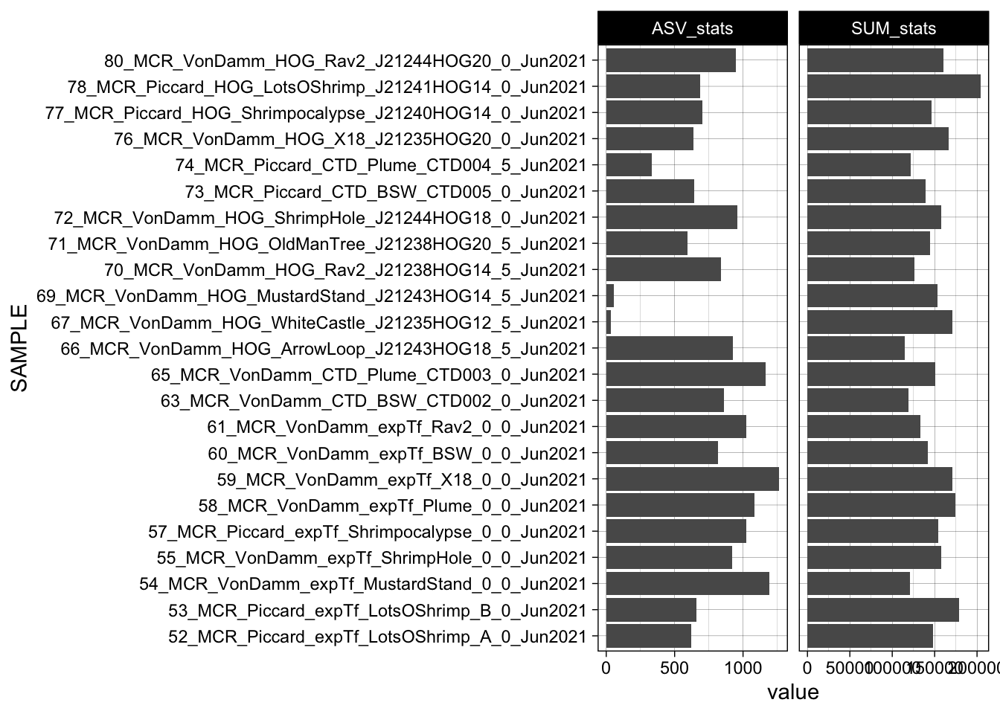

Code
library(tidyverse); library(phyloseq); library(ape)Set up R environment
Import previously sequenced and analyzed tag-sequence data. See https://shu251.github.io/microeuk-amplicon-survey/ for additional information.
metadata <- read.csv("input-data/samplelist-metadata.csv")
# head(metadata)
# unique(metadata$Sample_actual)
mcr <- c("VonDamm", "Piccard")
metadata_formatted <- metadata %>%
filter(SITE %in% mcr) %>%
mutate_all(as.character) %>%
filter(Sample_or_Control == "Sample") %>%
filter(!(SAMPLETYPE == "Microcolonizer")) %>%
mutate(SAMPLETYPE_BIN = case_when(
SAMPLETYPE == "Vent" ~ "vent",
TRUE ~ "non-vent"
)) %>%
select(SAMPLE, VENT, SITE, SAMPLEID, DEPTH, SAMPLETYPE, SAMPLETYPE_BIN, YEAR, TEMP = starts_with("TEMP"), pH, PercSeawater = starts_with("Perc"), Mg = starts_with("Mg"), H2 = starts_with("H2."), H2S = starts_with("H2S"), CH4 = starts_with("CH4"), ProkConc, Sample_or_Control)Loading objects:
list_of_contam_asvsasv_wtax_qc <- merged_asv %>%
select(FeatureID = '#OTU ID', everything()) %>%
filter(!(FeatureID %in% list_of_contam_asvs)) %>%
# In wide format, subsample 1000 random ASVs
# sample_n(1000, replace = FALSE) %>%
pivot_longer(cols = !FeatureID,
names_to = "SAMPLE", values_to = "value") %>%
filter(grepl("_MCR_", SAMPLE)) %>%
left_join(merged_tax, by = c("FeatureID" = "Feature ID")) %>%
left_join(filter(metadata_formatted, grepl("_MCR_", SAMPLE))) %>%
unite(SAMPLENAME, SITE, SAMPLETYPE, YEAR, VENT, SAMPLEID, sep = " ", remove = FALSE)
# dim(asv_wtax_qc)
# length(unique(asv_wtax_qc$FeatureID))tax_matrix <- asv_wtax_qc %>%
select(FeatureID, Taxon) %>%
distinct() %>%
separate(Taxon, c("Domain", "Supergroup",
"Phylum", "Class", "Order",
"Family", "Genus", "Species"), sep = ";") %>%
column_to_rownames(var = "FeatureID") %>%
as.matrix
asv_matrix <- asv_wtax_qc %>%
select(FeatureID, SAMPLE, value) %>%
pivot_wider(names_from = SAMPLE, values_from = value, values_fill = 0) %>%
column_to_rownames(var = "FeatureID") %>%
as.matrix
# dim(asv_matrix)
# dim(asv_matrix); dim(tax_matrix)
# Align row names for each matrix
rownames(tax_matrix) <- row.names(asv_matrix)
# dim(asv_matrix)
mcr_samples <- as.character(colnames(asv_matrix))
# Set rownames of metadata table to SAMPLE information
metadata_mcr <- filter(metadata_formatted, SAMPLE %in% mcr_samples) %>%
rownames_to_column(var = "X") %>%
column_to_rownames(var = "SAMPLE")
# dim(metadata_mcr)# Import asv and tax matrices
ASV = otu_table(asv_matrix, taxa_are_rows = TRUE)
TAX = tax_table(tax_matrix)
phylo_obj <- phyloseq(ASV, TAX)
# phylo_obj
# Import metadata as sample data in phyloseq
samplenames <- sample_data(metadata_mcr)
# samplenames
# join as phyloseq object
physeq_wnames = merge_phyloseq(phylo_obj, samplenames)
# colnames(ASV)
# TAX
## Check
physeq_wnamesphyloseq-class experiment-level object
otu_table() OTU Table: [ 17878 taxa and 23 samples ]
sample_data() Sample Data: [ 23 samples by 17 sample variables ]
tax_table() Taxonomy Table: [ 17878 taxa by 8 taxonomic ranks ][1] 17878[1] 23# # physeq_wnames # run with sample, 1000 tax.
# # head(taxa_names(physeq_wnames))
?rtree
mcr_tree <- rtree(ntaxa(physeq_wnames), rooted = TRUE, tip.label = taxa_names(physeq_wnames))
# class(mcr_tree)
# ?merge_phyloseq
physeq_mcr <- merge_phyloseq(physeq_wnames, mcr_tree)
# taxa_names(physeq_wnames)Total ASVs and sequences for each sample.
asv_wtax_qc %>%
filter(value > 0) %>%
group_by(SAMPLE, VENT, SITE) %>%
summarise(SUM_stats = sum(value),
ASV_stats = n_distinct(FeatureID)) %>%
pivot_longer(cols = ends_with("_stats")) %>%
ggplot(aes(x = SAMPLE, y = value)) +
geom_bar(stat = "identity") +
coord_flip() +
# geom_hline(yintercept=10000, linetype="dashed", color = "green") +
facet_grid(. ~ name, scales = "free") +
theme_linedraw()`summarise()` has grouped output by 'SAMPLE', 'VENT'. You can override using
the `.groups` argument.
Create supplementary table with ASV and sequence stats.
`summarise()` has grouped output by 'SAMPLE', 'VENT'. You can override using
the `.groups` argument.---
title: "Sequence QC"
format:
html:
code-fold: true
code-tools: true
code-copy: true
toc: true
toc-location: left
number-sections: true
number-depth: 2
editor: visual
---
# Compile ASV data from MCR from previous sequence analysis
Set up R environment
```{r}
#| warning: false
library(tidyverse); library(phyloseq); library(ape)
```
Import previously sequenced and analyzed tag-sequence data. See https://shu251.github.io/microeuk-amplicon-survey/ for additional information.
```{r}
#| include: false
#| message: false
merged_tax <- read_delim("../../microeuks_deepbiosphere_datamine/microeuk-amplicon-survey/data-input/taxonomy.tsv", delim = "\t")
merged_asv <- read_delim("../../microeuks_deepbiosphere_datamine/microeuk-amplicon-survey/data-input/microeuk-merged-asv-table.tsv", delim = "\t", skip = 1)
```
# Import metadata
```{r}
#| warning: false
metadata <- read.csv("input-data/samplelist-metadata.csv")
# head(metadata)
# unique(metadata$Sample_actual)
mcr <- c("VonDamm", "Piccard")
metadata_formatted <- metadata %>%
filter(SITE %in% mcr) %>%
mutate_all(as.character) %>%
filter(Sample_or_Control == "Sample") %>%
filter(!(SAMPLETYPE == "Microcolonizer")) %>%
mutate(SAMPLETYPE_BIN = case_when(
SAMPLETYPE == "Vent" ~ "vent",
TRUE ~ "non-vent"
)) %>%
select(SAMPLE, VENT, SITE, SAMPLEID, DEPTH, SAMPLETYPE, SAMPLETYPE_BIN, YEAR, TEMP = starts_with("TEMP"), pH, PercSeawater = starts_with("Perc"), Mg = starts_with("Mg"), H2 = starts_with("H2."), H2S = starts_with("H2S"), CH4 = starts_with("CH4"), ProkConc, Sample_or_Control)
```
### Import decontam results to QC ASV table
```{r}
#| warning: false
load("../../microeuks_deepbiosphere_datamine/microeuk-amplicon-survey/seq-analysis/contam-asvs.RData", verbose= TRUE)
# class(list_of_contam_asvs)
```
```{r}
#| warning: false
asv_wtax_qc <- merged_asv %>%
select(FeatureID = '#OTU ID', everything()) %>%
filter(!(FeatureID %in% list_of_contam_asvs)) %>%
# In wide format, subsample 1000 random ASVs
# sample_n(1000, replace = FALSE) %>%
pivot_longer(cols = !FeatureID,
names_to = "SAMPLE", values_to = "value") %>%
filter(grepl("_MCR_", SAMPLE)) %>%
left_join(merged_tax, by = c("FeatureID" = "Feature ID")) %>%
left_join(filter(metadata_formatted, grepl("_MCR_", SAMPLE))) %>%
unite(SAMPLENAME, SITE, SAMPLETYPE, YEAR, VENT, SAMPLEID, sep = " ", remove = FALSE)
# dim(asv_wtax_qc)
# length(unique(asv_wtax_qc$FeatureID))
```
```{r}
#| warning: false
tax_matrix <- asv_wtax_qc %>%
select(FeatureID, Taxon) %>%
distinct() %>%
separate(Taxon, c("Domain", "Supergroup",
"Phylum", "Class", "Order",
"Family", "Genus", "Species"), sep = ";") %>%
column_to_rownames(var = "FeatureID") %>%
as.matrix
asv_matrix <- asv_wtax_qc %>%
select(FeatureID, SAMPLE, value) %>%
pivot_wider(names_from = SAMPLE, values_from = value, values_fill = 0) %>%
column_to_rownames(var = "FeatureID") %>%
as.matrix
# dim(asv_matrix)
# dim(asv_matrix); dim(tax_matrix)
# Align row names for each matrix
rownames(tax_matrix) <- row.names(asv_matrix)
# dim(asv_matrix)
mcr_samples <- as.character(colnames(asv_matrix))
# Set rownames of metadata table to SAMPLE information
metadata_mcr <- filter(metadata_formatted, SAMPLE %in% mcr_samples) %>%
rownames_to_column(var = "X") %>%
column_to_rownames(var = "SAMPLE")
# dim(metadata_mcr)
```
### Import as phyloseq objects
```{r}
#| warning: false
# Import asv and tax matrices
ASV = otu_table(asv_matrix, taxa_are_rows = TRUE)
TAX = tax_table(tax_matrix)
phylo_obj <- phyloseq(ASV, TAX)
# phylo_obj
# Import metadata as sample data in phyloseq
samplenames <- sample_data(metadata_mcr)
# samplenames
# join as phyloseq object
physeq_wnames = merge_phyloseq(phylo_obj, samplenames)
# colnames(ASV)
# TAX
## Check
physeq_wnames
ntaxa(physeq_wnames) #17878
nsamples(physeq_wnames) #23
# # physeq_wnames # run with sample, 1000 tax.
# # head(taxa_names(physeq_wnames))
?rtree
mcr_tree <- rtree(ntaxa(physeq_wnames), rooted = TRUE, tip.label = taxa_names(physeq_wnames))
# class(mcr_tree)
# ?merge_phyloseq
physeq_mcr <- merge_phyloseq(physeq_wnames, mcr_tree)
# taxa_names(physeq_wnames)
```
### Save output ASV tables for downstream analyses
```{r}
#| warning: false
#
save(phylo_obj, samplenames, physeq_wnames, metadata_mcr, asv_wtax_qc, TAX, tax_matrix, physeq_mcr, file = "input-data/MCR-amplicon-data.RData")
```
## Sequence stats
Total ASVs and sequences for each sample.
```{r}
asv_wtax_qc %>%
filter(value > 0) %>%
group_by(SAMPLE, VENT, SITE) %>%
summarise(SUM_stats = sum(value),
ASV_stats = n_distinct(FeatureID)) %>%
pivot_longer(cols = ends_with("_stats")) %>%
ggplot(aes(x = SAMPLE, y = value)) +
geom_bar(stat = "identity") +
coord_flip() +
# geom_hline(yintercept=10000, linetype="dashed", color = "green") +
facet_grid(. ~ name, scales = "free") +
theme_linedraw()
```
Create supplementary table with ASV and sequence stats.
```{r}
table_supp_seqstats <- asv_wtax_qc %>%
filter(value > 0) %>%
group_by(SAMPLE, VENT, SITE) %>%
summarise(SUM_stats = sum(value),
ASV_stats = n_distinct(FeatureID))
# write.csv(table_supp_seqstats, file = "output-data/supp-table-sequencestats.csv")
```